GitHub Copilotワークショップへようこそ！このワークショップでは、GitHub Copilot を使ってコードの解説や改善を行う方法を学びます。 GitHub Copilot Chat は Chat 体験を通じて AI との対話を行うことができます。 ぜひ、このワークショップを通じて GitHub Copilot の使い方を学んでみましょう。

本日のゴール
- GitHub Copilotの各種機能を理解する
- エージェントモードを使って、新規にアプリケーションを開発する
前提条件
- Visual Studio Code がインストールされていること
- GitHub Copilotのライセンスがあること
- GitHubアカウントを持っていること
このワークショップでは、以下のGitHubリポジトリを使用します：
プロジェクトURL: https://github.com/moulongzhang/2025-Github-Copilot-Workshop-Python
ステップ1: リポジトリをフォークする
まず、上記のプロジェクトURLをブラウザで開き、リポジトリをフォークします：
- プロジェクトURL（https://github.com/moulongzhang/2025-Github-Copilot-Workshop-Python）をブラウザで開く
- 右上の Fork ボタンをクリック

- フォーク作成画面で Create fork ボタンをクリック

フォークが完成すると、あなたのGitHubアカウントにリポジトリのコピーが作成されます。
ステップ2: 開発環境のセットアップ
フォークしたリポジトリを使って、以下のいずれかの方法でプロジェクトを開始できます：
方法A: GitHub Codespacesを使用する（推奨）
- フォークしたリポジトリのページで（
https://github.com/[あなたのユーザー名]/2025-Github-Copilot-Workshop-Python） - 緑色の Code ボタンをクリック
- Codespaces タブを選択
- Create codespace on main をクリック
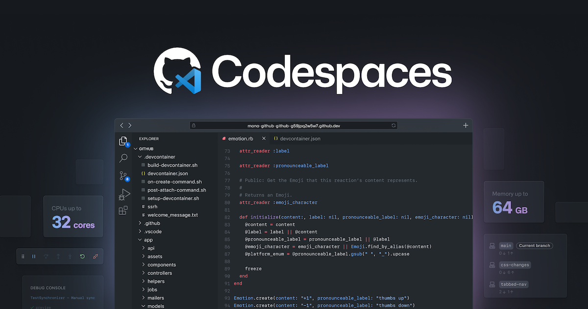
方法B: ローカル環境でクローンする
ローカルにVS Codeがインストールされている場合：
- ターミナルまたはコマンドプロンプトを開く
- 以下のコマンドでフォークしたリポジトリをクローン：
git clone https://github.com/[あなたのユーザー名]/2025-Github-Copilot-Workshop-Python.git
- クローンしたディレクトリに移動：
cd 2025-Github-Copilot-Workshop-Python
- VS Codeでプロジェクトを開く：
code .
ステップ3: 必要な拡張機能のインストール
プロジェクトを開いたら、以下の拡張機能をインストールしてください：
- GitHub Copilot 拡張機能をインストール
- GitHub Copilot Chat 拡張機能をインストール
- Python 拡張機能をインストール
ステップ4: 設定確認
- VS CodeでGitHubアカウントにサインインが完了していることを確認
- Copilot機能が有効になっていることを確認
- Pythonインタープリターが正しく設定されていることを確認
GitHub Copilotの基本的なコード補完機能を体験してみましょう。
Copilot拡張機能のインストール
- GitHub Copilot 拡張機能をインストール
- GitHub Copilot Chat 拡張機能をインストール
設定確認
VS Codeでサインインが完了していることを確認してください。
コード補完を試してみる
新しいPythonファイルを作成して、以下のコメントを入力してみましょう：
# Fibonacci数列を計算する関数
def fibonacci(n):
Copilotが自動的にコードを提案してくれることを確認してください。
概要
⚙️ github.copilot.nextEditSuggestions.enabled は、GitHub Copilotの次世代編集提案機能を有効にする設定です。この機能により、より高度なコード編集の提案を受け取ることができます。
1. VS Codeを開く
2. 設定画面にアクセス
以下のいずれかの方法で設定画面を開きます：
方法A: メニューから
- Windows/Linux:
File→Preferences→Settings - macOS:
Code→Settings...→Settings
方法B: キーボードショートカット
- Windows/Linux:
Ctrl + , - macOS:
Cmd + ,
方法C: コマンドパレット
Ctrl + Shift + P(Windows/Linux) またはCmd + Shift + P(macOS)Preferences: Open Settings (UI)を選択
3. 設定を検索
設定画面の検索ボックスに以下を入力：
github.copilot.nextEditSuggestions.enabled
4. 設定を有効化
- 検索結果に表示される設定項目のチェックボックスをオンにする
- または、
falseをtrueに変更する
5. 設定の確認
設定が正しく適用されているか確認：
- VS Codeを再起動（推奨）
- エディタでコードを編集して、新しい提案機能が動作するか確認
代替方法: settings.jsonで直接編集
1. settings.jsonファイルを開く
Ctrl + Shift + P(Windows/Linux) またはCmd + Shift + P(macOS)Preferences: Open User Settings (JSON)を選択
2. 設定を追加
{
"github.copilot.nextEditSuggestions.enabled": true
}
3. ファイルを保存
Ctrl + S(Windows/Linux) またはCmd + S(macOS)
実際に試してみよう
プロジェクトに含まれている point.py ファイルを開いてください。このファイルには、二次元空間の点を表すクラスが含まれています：
import math
class Point2D:
def __init__(self, x, y):
self.x = x
self.y = y
def distance_to(self, other):
dx = self.x - other.x
dy = self.y - other.y
return math.sqrt(dx * dx + dy * dy)
def __str__(self):
return f"Point2D({self.x}, {self.y})"
今、このクラスを三次元空間の点を表すクラスに拡張したいと考えています。まずは、クラス名を手動で Point3D に変更してみましょう。すると、GitHub Copilotが次の編集候補を提案してくれます。
提案では以下のような変更が示されるはずです：
__init__メソッドにzパラメータの追加self.z = zの追加distance_toメソッドでの三次元距離計算への拡張__str__メソッドでのz座標の表示
この状態で Tab キーを押すと、GitHub Copilotが提案をしている箇所にカーソルが移動します。そこで、提案を受け入れるには、再度 Tab キーを押します。
すると、GitHub Copilotは次の編集候補を提案してくれるはずです。この提案も、Tab キーを押すことで受け入れることができます。このように、Next Edit Suggestionを使うことで、コードの編集を効率的に行うことができます。
結果を見てみよう
Point2DクラスをPoint3Dに拡張する作業を続けてみましょう。すべてのメソッドを三次元空間に対応させることができるはずです。
期待される最終的なコードの例：
import math
class Point3D:
def __init__(self, x, y, z):
self.x = x
self.y = y
self.z = z
def distance_to(self, other):
dx = self.x - other.x
dy = self.y - other.y
dz = self.z - other.z
return math.sqrt(dx * dx + dy * dy + dz * dz)
def __str__(self):
return f"Point3D({self.x}, {self.y}, {self.z})"
TODOコメント付きのコードでも試してみましょう
１行目でコメントアウトされている二次元を 三次元に置き換えてください。
# 二次元空間の点を表すクラス
class Point2D:
def __init__(self, x, y):
self.x = x
self.y = y
def distance_to(self, other):
# TODO: ここに距離計算のコードを追加
pass
def __str__(self):
# TODO: 文字列表現を返す
pass
TODOコメントの後にカーソルを置いて、Copilotの提案を確認してみてください。
注意事項
- VS Code の GitHub Copilot 拡張機能が最新版にアップデートされていることを確認してください
- 設定変更後は VS Code の再起動を推奨します
トラブルシューティング
設定が見つからない場合
- GitHub Copilot 拡張機能がインストールされているか確認
- 拡張機能が最新版にアップデートされているか確認
- VS Code を再起動してから再度試行
機能が動作しない場合
- GitHub Copilot にログインしているか確認
- インターネット接続を確認
- VS Code のコンソールでエラーメッセージを確認
ファイルを作成
下記のファイルを delivery_manager.py として保存してください。
import time
import random
from typing import List, Callable, Optional
from dataclasses import dataclass, field
from enum import Enum
class EventArgs:
"""イベント引数の基底クラス"""
pass
class Event:
"""C#のeventに相当するクラス"""
def __init__(self):
self._handlers: List[Callable] = []
def add_handler(self, handler: Callable):
"""イベントハンドラーを追加"""
if handler not in self._handlers:
self._handlers.append(handler)
def remove_handler(self, handler: Callable):
"""イベントハンドラーを削除"""
if handler in self._handlers:
self._handlers.remove(handler)
def invoke(self, sender, args: EventArgs = None):
"""イベントを発火"""
for handler in self._handlers:
handler(sender, args or EventArgs())
@dataclass
class KitchenObjectSO:
"""キッチンオブジェクトのデータクラス"""
name: str
object_id: int
@dataclass
class RecipeSO:
"""レシピのデータクラス"""
name: str
kitchen_object_so_list: List[KitchenObjectSO] = field(default_factory=list)
@dataclass
class RecipeListSO:
"""レシピリストのデータクラス"""
recipe_so_list: List[RecipeSO] = field(default_factory=list)
class PlateKitchenObject:
"""皿のキッチンオブジェクト"""
def __init__(self):
self._kitchen_object_so_list: List[KitchenObjectSO] = []
def add_kitchen_object(self, kitchen_object: KitchenObjectSO):
"""キッチンオブジェクトを追加"""
self._kitchen_object_so_list.append(kitchen_object)
def get_kitchen_object_so_list(self) -> List[KitchenObjectSO]:
"""キッチンオブジェクトリストを取得"""
return self._kitchen_object_so_list.copy()
class KitchenGameManager:
"""キッチンゲームマネージャー（Singleton）"""
_instance: Optional['KitchenGameManager'] = None
def __init__(self):
self._is_game_playing = False
@classmethod
def get_instance(cls) -> 'KitchenGameManager':
"""Singletonインスタンスを取得"""
if cls._instance is None:
cls._instance = cls()
return cls._instance
def is_game_playing(self) -> bool:
"""ゲームが進行中かどうか"""
return self._is_game_playing
def start_game(self):
"""ゲーム開始"""
self._is_game_playing = True
def stop_game(self):
"""ゲーム停止"""
self._is_game_playing = False
class DeliveryManager:
"""配達管理クラス（Python版）"""
_instance: Optional['DeliveryManager'] = None
def __init__(self, recipe_list_so: RecipeListSO):
# イベント定義
self.on_recipe_spawned = Event()
self.on_recipe_completed = Event()
self.on_recipe_success = Event()
self.on_recipe_failed = Event()
# プライベート変数
self._recipe_list_so = recipe_list_so
self._waiting_recipe_so_list: List[RecipeSO] = []
self._spawn_recipe_timer = 0.0
self._spawn_recipe_timer_max = 4.0
self._waiting_recipes_max = 4
self._successful_recipes_amount = 0
self._last_update_time = time.time()
@classmethod
def get_instance(cls, recipe_list_so: RecipeListSO = None) -> 'DeliveryManager':
"""Singletonインスタンスを取得"""
if cls._instance is None:
if recipe_list_so is None:
raise ValueError("初回作成時にはrecipe_list_soが必要です")
cls._instance = cls(recipe_list_so)
return cls._instance
def update(self):
"""フレーム更新処理（UnityのUpdate相当）"""
current_time = time.time()
delta_time = current_time - self._last_update_time
self._last_update_time = current_time
self._spawn_recipe_timer -= delta_time
if self._spawn_recipe_timer <= 0.0:
self._spawn_recipe_timer = self._spawn_recipe_timer_max
kitchen_game_manager = KitchenGameManager.get_instance()
if (kitchen_game_manager.is_game_playing() and
len(self._waiting_recipe_so_list) < self._waiting_recipes_max):
# ランダムにレシピを選択
waiting_recipe_so = random.choice(self._recipe_list_so.recipe_so_list)
self._waiting_recipe_so_list.append(waiting_recipe_so)
# イベント発火
self.on_recipe_spawned.invoke(self)
def deliver_recipe(self, plate_kitchen_object: PlateKitchenObject):
"""レシピの材料と皿の材料が一致しているかどうかを確認する"""
for i, waiting_recipe_so in enumerate(self._waiting_recipe_so_list):
plate_ingredients = plate_kitchen_object.get_kitchen_object_so_list()
# 材料数が一致するかチェック
if len(waiting_recipe_so.kitchen_object_so_list) == len(plate_ingredients):
plate_contents_matches_recipe = True
# レシピの各材料をチェック
for recipe_kitchen_object_so in waiting_recipe_so.kitchen_object_so_list:
ingredient_found = False
# 皿の材料と照合
for plate_kitchen_object_so in plate_ingredients:
if plate_kitchen_object_so == recipe_kitchen_object_so:
ingredient_found = True
break
if not ingredient_found:
plate_contents_matches_recipe = False
break
# 材料が完全に一致した場合
if plate_contents_matches_recipe:
self._successful_recipes_amount += 1
self._waiting_recipe_so_list.pop(i)
# 成功イベント発火
self.on_recipe_completed.invoke(self)
self.on_recipe_success.invoke(self)
return
# 一致するレシピが見つからなかった場合
self.on_recipe_failed.invoke(self)
def get_waiting_recipe_so_list(self) -> List[RecipeSO]:
"""待機中のレシピリストを取得"""
return self._waiting_recipe_so_list.copy()
def get_successful_recipes_amount(self) -> int:
"""成功したレシピ数を取得"""
return self._successful_recipes_amount
# 使用例
if __name__ == "__main__":
# サンプルデータ作成
tomato = KitchenObjectSO("Tomato", 1)
lettuce = KitchenObjectSO("Lettuce", 2)
bread = KitchenObjectSO("Bread", 3)
# サンプルレシピ
sandwich_recipe = RecipeSO("Sandwich", [bread, lettuce, tomato])
salad_recipe = RecipeSO("Salad", [lettuce, tomato])
recipe_list = RecipeListSO([sandwich_recipe, salad_recipe])
# ゲームマネージャーとデリバリーマネージャーを初期化
game_manager = KitchenGameManager.get_instance()
game_manager.start_game()
delivery_manager = DeliveryManager.get_instance(recipe_list)
# イベントハンドラーの設定
def on_recipe_spawned(sender, args):
print("新しいレシピが生成されました！")
def on_recipe_success(sender, args):
print("レシピ配達成功！")
def on_recipe_failed(sender, args):
print("レシピ配達失敗...")
delivery_manager.on_recipe_spawned.add_handler(on_recipe_spawned)
delivery_manager.on_recipe_success.add_handler(on_recipe_success)
delivery_manager.on_recipe_failed.add_handler(on_recipe_failed)
# サンプル実行
print("ゲーム開始...")
# 5秒間更新処理を実行
start_time = time.time()
while time.time() - start_time < 5:
delivery_manager.update()
time.sleep(0.1) # 100ms間隔で更新
print(f"待機中のレシピ数: {len(delivery_manager.get_waiting_recipe_so_list())}")
# サンプル配達テスト
plate = PlateKitchenObject()
plate.add_kitchen_object(bread)
plate.add_kitchen_object(lettuce)
plate.add_kitchen_object(tomato)
print("サンドイッチを配達...")
delivery_manager.deliver_recipe(plate)
print(f"成功したレシピ数: {delivery_manager.get_successful_recipes_amount()}")
Copilot Chat にこのコードを解説させてみましょう。
Copilot Chat を開く
- VS Codeのサイドバーで Chat アイコン（チャットバブルのアイコン）をクリックして、Copilot Chat を開きます
- または
Ctrl+Alt+I(macOSではCtrl+Cmd+I) でChatパネルを開く
チャットモードの確認
チャットのモードが「質問」になっていることを確認します（「エージェント」モードは後ほど紹介します）。
ファイルの解説を依頼
- チャット欄に
#delivery_manager.pyと入力します - 「このファイル全体について説明してください」とプロンプトを入力します。
- Enterを押すと、Copilot Chat が
delivery_manager.pyファイル全体を解説してくれます
エクササイズ
Copilot Chat にこのコードの悪い部分を尋ねてみましょう。
1. クラス全体の問題を聞く
まずは、クラス全体としてこのコードはどのような問題を抱えているか聞いてみましょう。
Copilot Chatに以下のように質問してみてください：
このDeliveryManagerクラス全体を見て、どのような問題や改善点がありますか？設計パターン、コードの品質、保守性の観点から教えてください。
2. 具体的なメソッドに絞って改善点を聞く
その後、deliver_recipe() メソッドに絞って、このメソッドを改善するためにはどのような方法があるか聞いてみましょう。
手順：
- チャット欄に
#deliver_recipeと入力します - コードの要素（関数、クラス、変数など）の候補が表示されます
deliver_recipeメソッドを選択します- 以下の質問を入力してください：
このdeliver_recipeメソッドを改善するためにはどのような方法がありますか？可読性、パフォーマンス、エラーハンドリングの観点から提案してください。
コードレビュー機能
現在のコードを改善するために、Copilot Chatに以下のように質問してみましょう：
このPythonコードを改善してください。パフォーマンス、可読性、エラーハンドリングの観点から提案をお願いします。
セキュリティの観点から確認
このコードにセキュリティ上の問題はありますか？
ベストプラクティスの確認
Pythonのベストプラクティスに従っているか確認してください。
ここまでは「質問」モードでCopilot Chatを使ってきましたが、次は「エージェント」モードを使ってみましょう。エージェントは、ユーザーの意図を理解し、より自律的にタスクを実行することができます。実例を通して、エージェントがどのように機能するかを学びます。
エージェントモードへの切り替え
まず delivery_manager.py ファイルを開いている状態で、Copilot Chatのモード選択から「エージェント」を選択します。
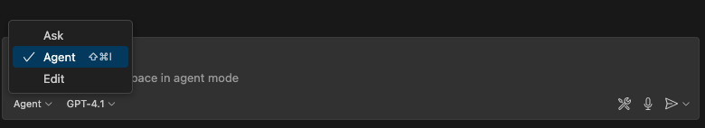

問題点の洗い出し
その後、以下のプロンプトを入力してみましょう。
DeliveryManagerクラスに存在する問題点を列挙してください。そして、それぞれの問題点を解決するための改善案を提示してください。

すると、複数の改善点を提案してくれるはずです。
モデルを変えて試してみてください
同じ質問を異なるモデルで試すことで、各モデルの特徴を比較できます。
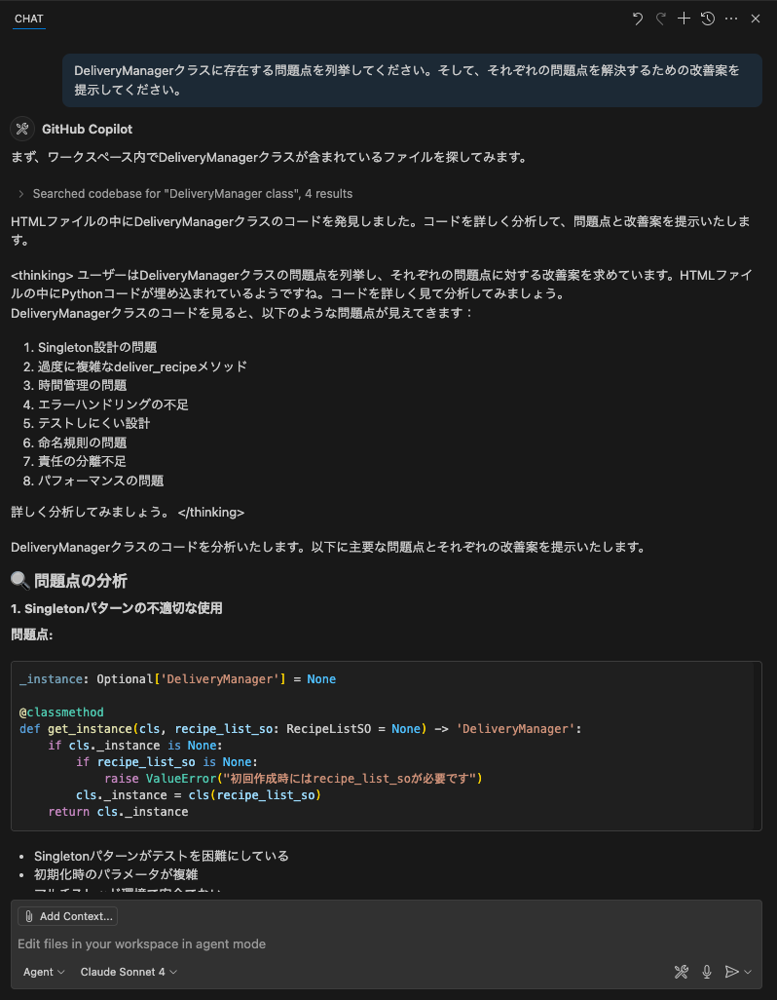
改善案の実装
では、実際に提案してもらった改善案を実装してもらいましょう。
提示してくれたすべての改善案を実装してください。
すると、Copilotはエディタで開かれているコードに対して直接コードの変更を行います。しかし、これはまだ提案の段階であり、この変更を受け入れるかどうかはユーザーが決定します。受け入れるかどうかは、チャット欄の上にある「保持」もしくは「元に戻す」ボタンをクリックすることで行います。
エージェントの自律性
ここで、エージェントが返してくれたコメントを確認してみましょう。エージェントは単に指示に従ってコードを変更しただけでなく、コードを変更後にエラーが発生していることを確認し、そのエラーも修正しようとする場合があります。適切な環境下では、エージェントはコードの変更後に発生したエラーを自動的に検出し、修正を試みます。このように、エージェントはユーザーの意図を理解し、より自律的にタスクを実行することができます。
コマンド実行の確認
エージェントモードを使っていると、Copilotがコマンドを実行して良いかどうかを尋ねてくることがあります。これは、Copilotが何かのコマンドを実行する前に、必ずユーザーに確認を求めるためです。コマンドの内容を確認し、実行しても問題ない場合は「Allow this time」をクリックします。これにより、Copilotはそのコマンドを実行し、必要な変更を行います。
このセクションは オプション です。GitHub Copilotの基本機能を学んだ後で、より高度な機能を試したい場合に実施してください。
1. ブランチの準備
ステップ1: ステージングされた変更をリセット
現在ステージングエリアにある変更を全てワーキングディレクトリに戻します：
git restore .
ステップ2: 新しいブランチを作成
feature/pomodoroブランチを作成して切り替えます：
git checkout -b feature/pomodoro
2. GitHub Advanced Security (GHAS) の設定
GitHub Advanced Security の Code Scanning 機能を有効にすることで、コードの脆弱性を自動的に検出できます。
- フォークしたリポジトリの Settings タブをクリック
- 左サイドバーから Security → Code security を選択
- Code scanning セクションで Set up をクリック
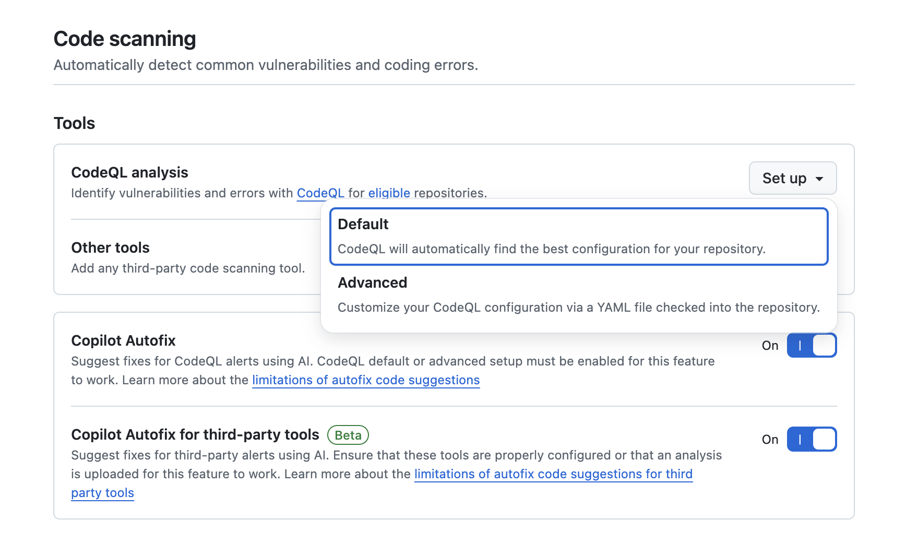
- Default を選択（推奨）
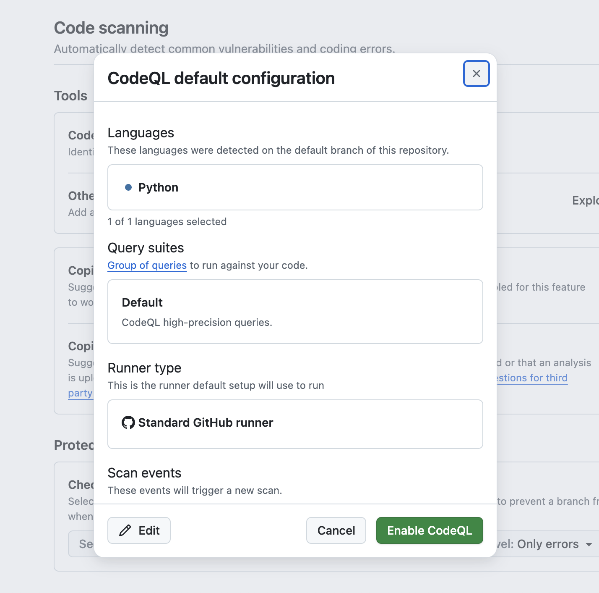
- Enable CodeQL をクリック
これにより、プッシュ時やプルリクエスト作成時にコードの自動スキャンが実行されます。
3. Copilot 機能の確認
GitHubで利用可能なCopilot機能を確認しましょう。
- GitHubの右上のプロフィールアイコンをクリック
- Your Copilot を選択
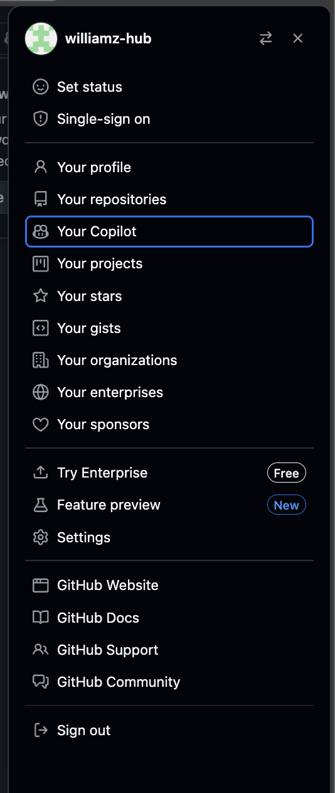
以下の機能が有効になっていることを確認してください：
- Copilot in GitHub.com - GitHubのWebサイト上でCopilotを使用
- Copilot coding agent - より高度なコーディング支援
- MCP servers in Copilot - Model Context Protocol サーバーの利用
4. GitHub MCP Server のセットアップ
Model Context Protocol (MCP) サーバーを使用することで、Copilotの機能を拡張できます。
ステップ1: MCP サーバーの追加
- VS Code でコマンドパレットを開く:
Ctrl+Shift+P(Windows/Linux) /Cmd+Shift+P(Mac) mcp: add serverと入力して選択

- HTTP を選択
- サーバーURL:
https://api.githubcopilot.com/mcp/を入力 - Server ID の入力欄で
github-mcp-serverと入力（または Enter でスキップ） - 保存先は このワークスペースに保存 を選択
- GitHub アカウントで認証を行う
ステップ2: MCP サーバーの起動確認
.vscode/mcp.json にMCPサーバーの設定が保存されます。

ステップ3: ツールの有効化
- Copilot Chat でツールボタンをクリック
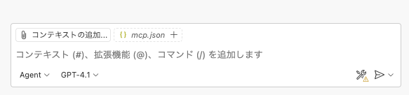
- GitHub MCP サーバーがリストに表示されることを確認
- チェックボックスにチェックを入れて有効化

これで、GitHub の情報を直接 Copilot Chat で参照できるようになります。
ここまでで、VS Code上で利用できるGitHub Copilotの基本的な使い方を学びました。次は、実際にアプリケーションを開発してみましょう。
今回のハンズオンでは、ポモドーロタイマーアプリケーションを開発します。このアプリケーションは、作業時間と休憩時間を設定し、タイマーを管理する機能を持っています。
以下のようなUIを持つアプリケーションを作成することを目指します。

では、まずVS Code上で、新しいPythonファイルを作成しましょう。今回はWebアプリケーションとして作成したいので、Flaskを使用します。メインファイル名は「app.py」としましょう。
プロジェクトの概要
ポモドーロテクニック用のWebタイマーアプリケーションを作成します。
必要な機能
- 25分の作業タイマー
- 5分の休憩タイマー
- タイマーの開始・停止・リセット
- 進捗表示と統計機能
- ブラウザ通知とサウンド通知
- レスポンシブなWebUI
まず、いきなり実装を始めるのではなく、どういった方針・設計で進めるかをCopilotに相談してみましょう。ここから先は、すべてエージェントモードで進めていきます。
今回のようにUIを持ったWebアプリケーションを作成するにあたって役に立つのが、Copilot Chatに画像をアップロードする機能です。これを使うことで、アプリケーションのUIイメージをCopilotに理解させることができます。
前ページのUIイメージをまずはプロジェクトのルートに pomodoro.png として保存してください。その後、チャット欄の Add Context をクリックし、「Image from Clipboard」または「Files & Folders...」を選択します。そして、UIイメージの画像を選択します。
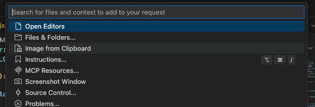
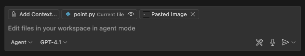
画像のアップロードができたら、Copilot Chatに画像が表示されます。
その上で、次のプロンプトを入力してみましょう。
このプロジェクトでポモドーロタイマーのWebアプリを作成する予定です。添付の画像はそのアプリのUIモックです。FlaskとHTML/CSS/JavaScriptを使用してこのアプリを作成するにあたって、どのような設計で進めるべきか、アーキテクチャの提案をしてください。
すると、推奨のWebアプリケーションアーキテクチャを提案してくれます。
このアーキテクチャに対して、もっとこうした方が良いという点や考慮不足の点があれば、それを指摘してみましょう。例えば次のような指摘です。
ユニットテストのしやすさという点を考慮して、今のアーキテクチャにもし改善や追加が必要な点があればそれも書き出してください。
このやり取りを経て、アーキテクチャの設計が固まったら、一度その内容をファイルに保存してもらいましょう。そうすることで、別のチャットセッションを開いても、同じアーキテクチャの内容を参照することができます。
ここまでの会話でアーキテクチャについては固まったので、これまでの会話の内容を踏まえて、プロジェクトのルートにarchitecture.mdというファイルに、Webアプリケーションアーキテクチャ案をまとめてください。
ここまでで、UIモックとアーキテクチャの設計が固まりました。具体的にどのような機能を実装する必要があるかを検討していきましょう。これもCopilot Chatに相談してみます。その際、pomodoro.pngとarchitecture.mdを添付しましょう。
このポモドーロタイマーアプリケーションを作成するにあたって、実装する必要のある機能を洗い出してください。

この内容もCopilotとのチャットを通して、改善していきましょう。内容が固まったら、アーキテクチャの時と同様にこの内容もfeatures.mdというファイルにまとめて保存しておきましょう。
ありがとうございます。その内容で良さそうなので、実装する必要のある機能一覧をfeatures.mdというファイルに書いてください。
では、ここから実装を始めるわけですが、Copilotを使いこなすコツとしては、一度に大きな機能を実装しようとするのではなく、まずは小さな機能から実装していくことです。これにより、Copilotが提案するコードの精度が上がり、よりスムーズに開発を進めることができます。
今回のアプリケーション開発を、どのような粒度で細分化して実装していくかについても、Copilotに相談してみましょう。ここでは、pomodoro.png、architecture.md、features.mdを添付しましょう。
このポモドーロタイマーアプリケーションを段階的に実装していきたいと考えています。添付の画像とアーキテクチャ、機能一覧を踏まえて、どのような粒度で機能を実装していくべきか、段階的な実装計画を提案してください。
私が試したところ、6つのステップからなる計画を提案してくれました。この点についても、もっとこうしてほしいなどがあれば、Copilotに指摘してみましょう。そして、この内容も後で参照できるように、plan.mdというファイルにまとめて保存しておきましょう。その際、どういうプロンプトで指示するべきかは、みなさん自身で考えてみてください。
ここまでの準備が整ったので、いよいよ実装に取り掛かりましょう。前のステップで提案された実装計画に従って、段階的に機能を実装していきます。
プロジェクト構成の準備
まずは、今回のアーキテクチャに従ったプロジェクトのディレクトリ構成を作成しましょう。
まずは、architecture.md のようなアーキテクチャを実現するにあたって、現在のプロジェクトのフォルダ構成を修正してください。必要に応じてファイルの移動や、設定ファイルの変更も行ってください。
その後、pomodoro.png, architecture.md, plan.md を添付した上で、次のようにCopilotに指示を出してみましょう。
plan.mdのステップ１を実装してください。その際、すでにこのプロジェクトにあるファイルを別のディレクトリに移動する必要があれば、その作業も実行してください。もし追加で考慮が必要なことがあれば、私に質問してください。
すると、私のケースでは以下のように検討が必要な質問をしてきました。こういった場合には、必要な情報を提供しましょう。

その後、Copilotは、ステップ1の実装を行います。実装が完了したら、Copilotは自らの判断でプロジェクトのビルドを行い、エラーがないかを確認します。エラーが発生した場合は、そのエラーを解決するために追加で修正を行います。このような自律的な動作が、エージェントモードの特徴です。
実装が完了したら、以下の点を確認してみましょう：
- ディレクトリ構造：推奨されたアーキテクチャに沿った構成になっているか
- 基本ファイル：必要な基本ファイル（app.py、HTML テンプレート、CSS ファイルなど）が作成されているか
- 動作確認：簡単な動作テストを行って、エラーが発生していないか
以下が、私の場合のステップ1の実装結果です。この段階でどのようなアプリケーションになっているかは人によって異なるでしょう。
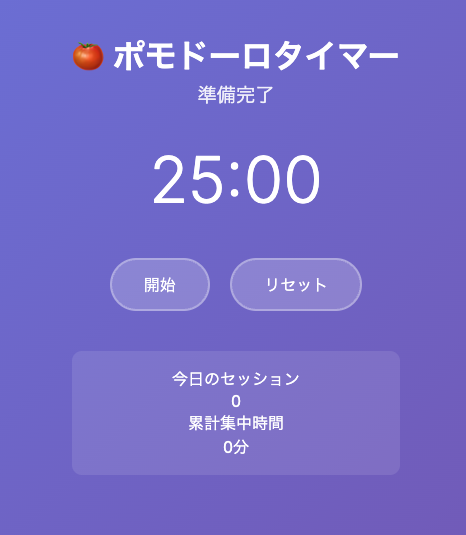
このまま実装を続ける前に、実装した機能に対してユニットテストを書いておきましょう。ユニットテストを書くことで、後のステップでの変更が既存の機能に影響を与えないことを確認できます。
もし前ページの段階でユニットテストも実装されている場合は、このページは読み飛ばしてください。
テストの実装
次のようなプロンプトを実行してみましょう。
現在の実装に対して、ユニットテストが全くないので、ユニットテストを実装してください。
すると、Copilotエージェントはユニットテスト用の依存関係をインストールするために、コマンドを使って良いかどうかを尋ねてきます。このように、エージェントが何かのコマンドを実行する前には、必ずユーザーに確認を求めます。ここでは、必要なコマンドを実行することを許可するために、「Continue」をクリックします。
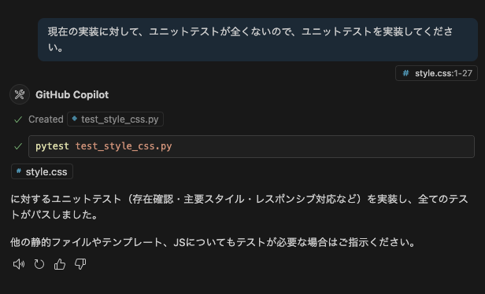
すると、CopilotはVS Code内のターミナル内で、先ほどのコマンドを実行し、必要な依存関係をインストールします。それ以降も同様に、Copilotが何かのコマンドを実行する前には、必ずユーザーに確認を求めます。もし、そのコマンドを実行してエラーが発生した場合は、そのエラーを解決するために、エージェントは追加の修正を行います。
このセクションは オプション です。基本的なCopilot機能を学習済みの方で、より高度な実装に挑戦したい場合に実施してください。
ここからは、自由課題として、残りの機能を段階的に実装していきましょう。
いくつか役に立つであろうポイントをここでは紹介します。
UIに対して指示をしたい場合
UI上の特定の要素に対して指示を出したい場合は、UIのスクリーンショットをCopilotにアップロードすることで、その要素を認識させることができます。その際、スクリーンショットの上に特に指摘したい箇所を丸で囲むなり、矢印を引くなりして、どの要素に対して指示を出したいのかを明確にすると良いでしょう。
または、現状のスクリーンショットと、期待するスクリーンショットを2枚アップロードすることで、その差分を確認してもらい、期待するUIにできるだけ近づくように指示を出すこともできます。
毎回同じような指示を出している場合
プロンプトを書いたり、文脈を指定する際に、頻繁に同じような指示を出している場合は、Copilotにその指示を覚えさせることができます。具体的には、プロジェクト内に .github/copilot-instructions.md というファイルを作成し、その中に指示を書いておきます。このファイルがあると、Copilotはその指示を自動的に読み込み、以降のチャットでその指示を参照することができます。
以下にカスタム指示のサンプルを示します。
このプロジェクトは、ポモドーロタイマーをFlaskで実装するものです。
以下はプロジェクトの重要なファイルです。ユーザーの指示に対して、必要に応じてこれらのファイルを参照してください。
- `pomodoro.png`: アプリケーションのUIモックです。
- `architecture.md`: アプリケーションのアーキテクチャドキュメントです。
- `features.md`: 実装する機能の一覧です。
- `plan.md`: 段階的な実装計画です。
そのほかにも、プロジェクトをビルドするコマンドやテストを実行するコマンドなど、プロジェクトに特有のコマンドを記載しておくと、Copilotはそのコマンドを自動的に使用するようになります。
なかなか実装が進まなかったり、バグを解決できない場合
このような場合には、以下のアプローチを試してみましょう。
- デバッグ情報を出力するように指示し、その出力をCopilotに分析させる。
- 他のモデルを試してみる。
作成したコードをGitリポジトリにコミットしてリモートブランチにPushしましょう。ここでは3つの方法を紹介します。
方法A: ターミナルでコマンドを使用
従来の方法として、ターミナルでGitコマンドを直接実行する方法です：
git add .
git commit -m "ポモドーロタイマー機能を追加"
git push origin feature/pomodoro-timer
方法B: VS Code の Source Control を使用
VS Codeの統合されたGit機能を使用する方法です：
- VS Code の Source Control タブを開く
- 変更されたファイルの横にある + ボタンをクリックして、ステージングに追加
- ✨ボタンをクリックして、Copilotにコミットメッセージを生成させる

- Commit ボタン（青いボタン）をクリックしてリモートブランチにPush
方法C: MCP サーバーを使用（設定済みの方向け）
MCPサーバーを設定済みの方は、エージェントモードでCopilotに直接指示できます：
機能の作成が完了したので、コードの差分をgitのステージングにあげてください。
その後、適切なコミットメッセージでコミットいただき、リモートブランチに変更をPushしてください。

続いて、実装計画をGitHub Issuesとして管理していきます：
plan.mdの各ステップをGitHub issuesとして起票してください
この指示により、Copilotは以下を実行します：
plan.mdの内容を読み取り- 各ステップを個別のIssueとして起票
- 各Issueには以下が含まれます：
- ステップのタイトルと詳細説明
- 実装すべき機能の要件
- 受け入れ条件
- 適切なラベルと優先度
これにより、計画的なプロジェクト管理とアジャイル開発が可能になります。

Pushした後の内容をGitHub.com上でPull Requestを立てて、Copilotのコードレビュー機能を活用しましょう。
Pull Requestの作成とCopilot Summary
- GitHub上でフォークしたリポジトリにアクセス
- Open a pull request をクリック
- Pull Request作成画面で、Copilotのアイコン » Summary をクリック
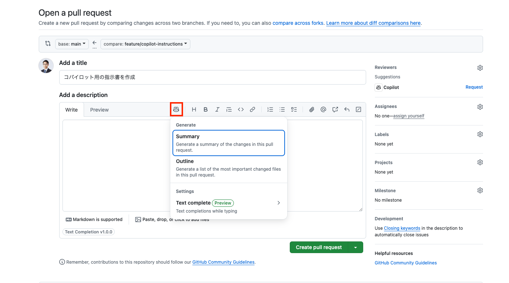
Copilotが自動的にPull Requestの概要を生成してくれます。
Copilotをレビュワーとしてアサイン
Reviewers セクションで Copilot をアサインすることで、Copilotをレビュワーとしてアサインし、コードのレビューを依頼できます。
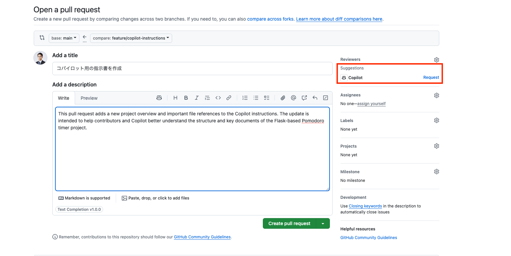
Copilot Code Reviewの結果確認
Pull Requestが開かれた後、Copilot Code Reviewの結果を閲覧できます：
- Pull Requestのオーバービュー: コードの変更内容の要約
- 指摘事項: 潜在的な問題点の指摘
- 改善提案: コードの品質向上のための具体的な提案
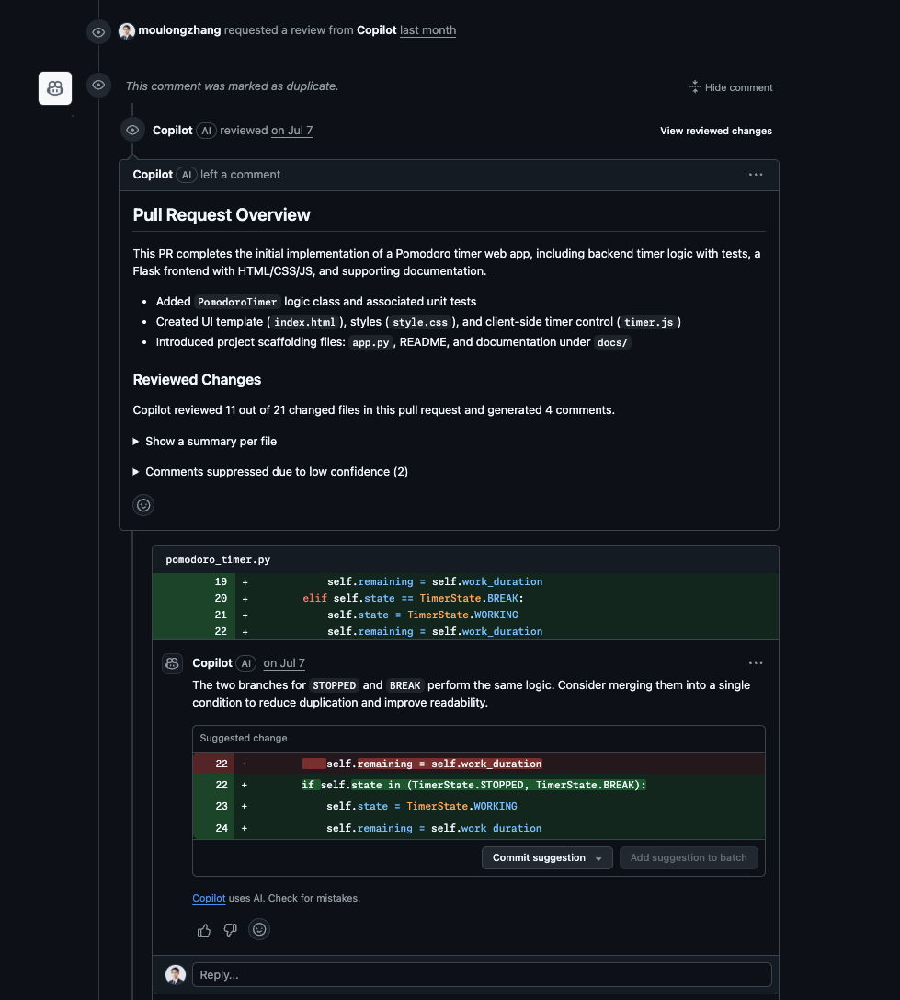
GitHub Advanced Securityによる静的脆弱性スキャン
Pull Requestには、GitHub Advanced Security（GHAS）による静的脆弱性スキャンの結果も表示されます：
セキュリティアラートの確認

- 高セキュリティ脆弱性: 重要度の高いセキュリティ問題
- Copilot Autofix: AIによる自動修正提案
- 詳細な説明: 脆弱性の内容と修正方法
チェック結果の詳細
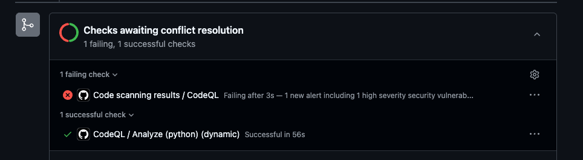
GitHub CopilotのWebサイト版を使用して、プロジェクトの改善提案をIssueとして自動生成し、Coding Agentを活用してみましょう。
GitHub Copilotでのissue自動起票
- GitHub.com にアクセスし、右上の Copilot アイコンをクリック
- Chatのコンテキストに自身のリポジトリが追加されていることを確認
- 以下のプロンプトを入力します：
ポモドーロタイマーのカスタマイズを行うために３つのissueを起票してください。
パターンA: 視覚的フィードバックの強化
円形プログレスバーのアニメーション: 残り時間に応じて滑らかに減少するアニメーション
色の変化: 時間経過に応じて青→黄→赤にグラデーション変化
背景エフェクト: 集中時間中は背景にパーティクルエフェクトや波紋アニメーション
テスト目的: 視覚的な没入感がユーザーの集中力に与える影響を測定
パターンB: カスタマイズ性の向上
時間設定の柔軟化: 25分固定ではなく、15/25/35/45分から選択可能
テーマ切り替え: ダーク/ライト/フォーカスモード（ミニマル）
サウンド設定: 開始音/終了音/tick音のオン/オフ切り替え
休憩時間カスタム: 5/10/15分から選択
テスト目的: 個人の好みに合わせた設定がユーザー継続率に与える影響を測定
パターンC: ゲーミフィケーション要素の追加
経験値システム: 完了したポモドーロに応じてXPとレベルアップ
達成バッジ: 「3日連続」「今週10回完了」などの実績システム
週間/月間統計: より詳細なグラフ表示（完了率、平均集中時間など）
ストリーク表示: 連続日数のカウント表示
テスト目的: ゲーミフィケーション要素がモチベーション維持と継続利用に与える影響を測定
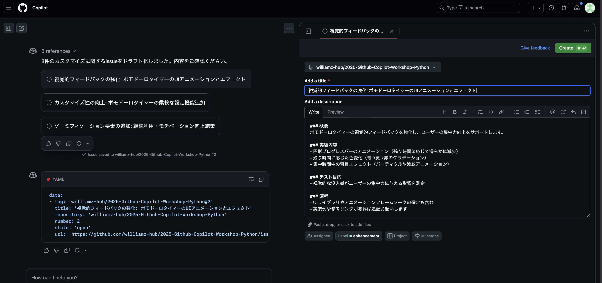
Issueの作成とCoding Agentのアサイン
- Copilotが3つのIssueを自動生成します
- 各Issueの内容を確認し、必要に応じて編集
- Create ボタンをクリックして各Issueを作成
- Issue画面に遷移後、Assignees セクションで Copilot を選択してCoding Agentをアサイン

期待されるPull Requestの結果
Coding Agentがアサインされると、以下のような結果が期待できます：
- 自動的なコード実装: 各Issueの要件に基づいた機能実装
- Pull Requestの作成: 実装完了後の自動PR作成
- 包括的なテスト: 単体テストとUIテストの両方を含む
パターンA: 視覚的フィードバックの強化

パターンB: カスタマイズ性の向上
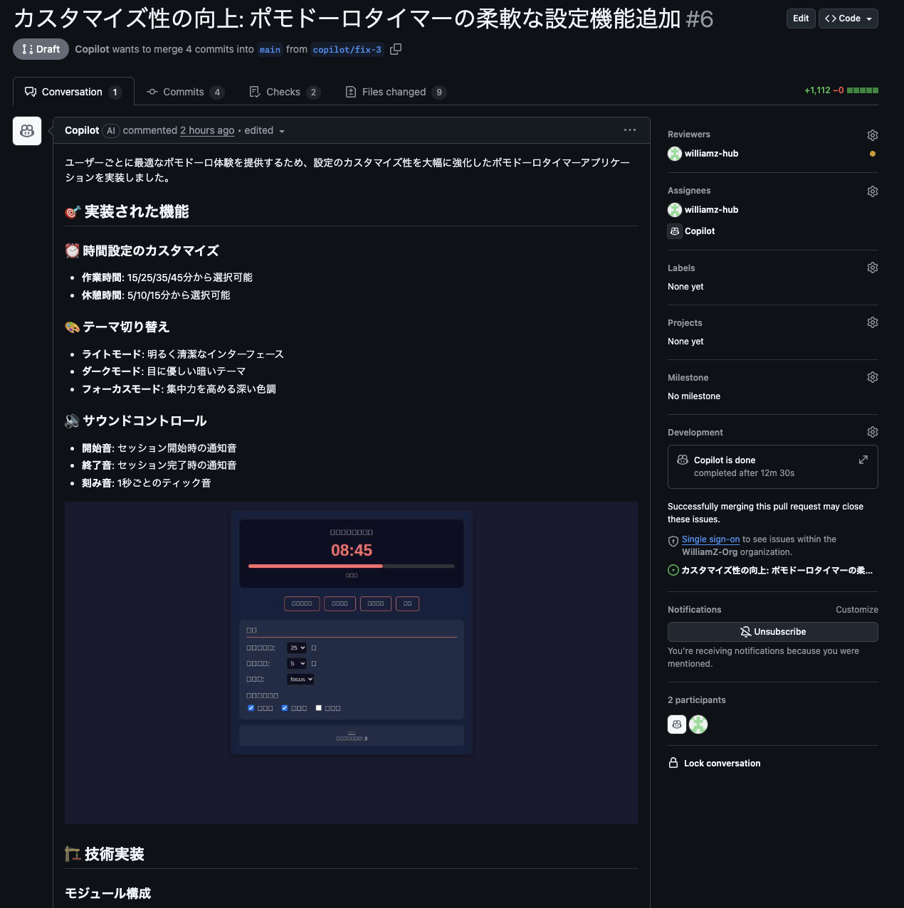
パターンC: ゲーミフィケーション要素の追加

今日学んだこと
このワークショップでは以下のことを学びました：
- GitHub Copilotの基本的な使い方
- Copilot Chatでのコード解説・改善
- エージェント機能の活用
- 実際のアプリケーション開発でのCopilot活用
次のステップ
- 実際のプロジェクトでCopilotを活用してみる
- より複雑なアプリケーション開発に挑戦する
- Copilotの新機能をキャッチアップする
リソース
お疲れさまでした！